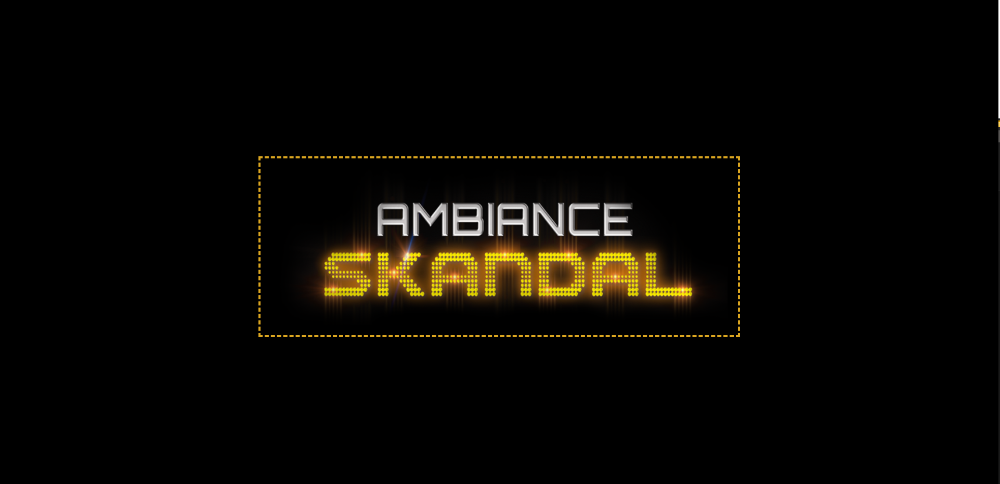
Vitrine
Site pour un groupe de musique
Vitrine immersive : identité visuelle, agenda, médias. Objectif : “faire vivre” l’univers du groupe tout en restant lisible.
HTMLCSSUIResponsive
Brief
Créer un site vitrine qui ressemble à une vraie page d’artiste : une DA marquée, une navigation simple, et des sections essentielles (concerts, médias, présentation).
Objectifs
- Donner une ambiance forte dès la première seconde (hero + typographie).
- Structurer le contenu comme un vrai site d’artiste (agenda / clips / réseaux).
- Rester lisible sur mobile (responsive + hiérarchie).
Mon rôle
Intégration front, composition des sections, choix UI et finitions (espacements / contrastes / lisibilité).
Résultat
Un rendu immersif mais clair, avec des sections bien séparées et une navigation simple.
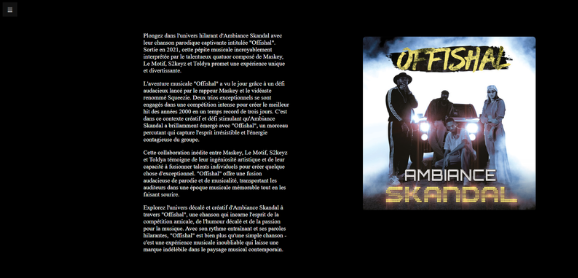
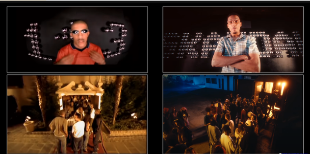

 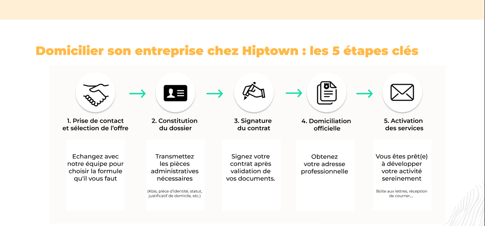
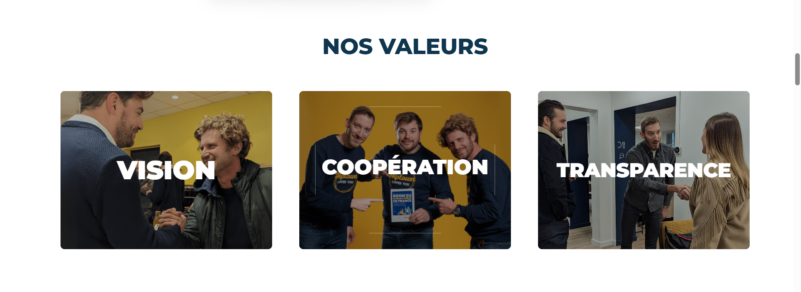
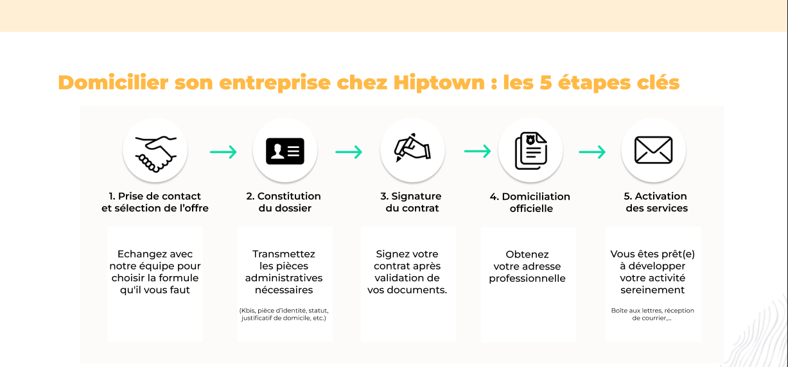
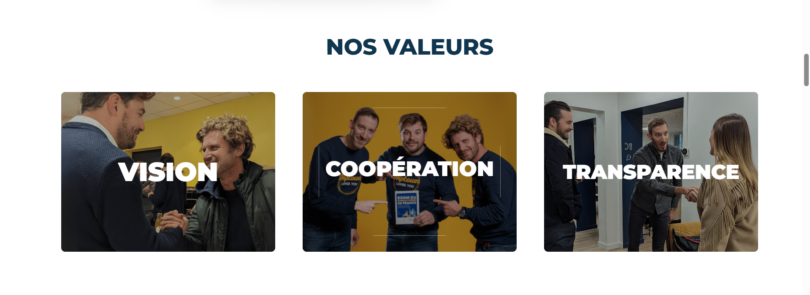
 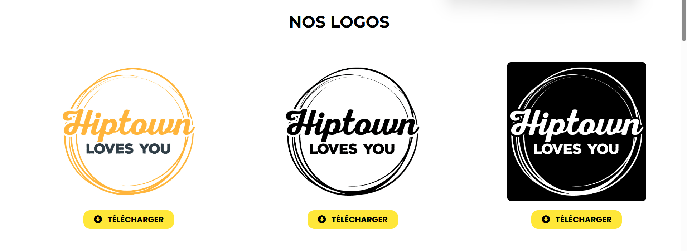
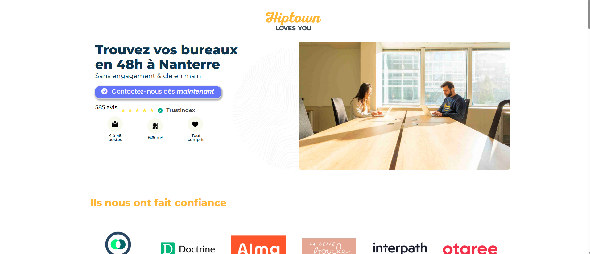
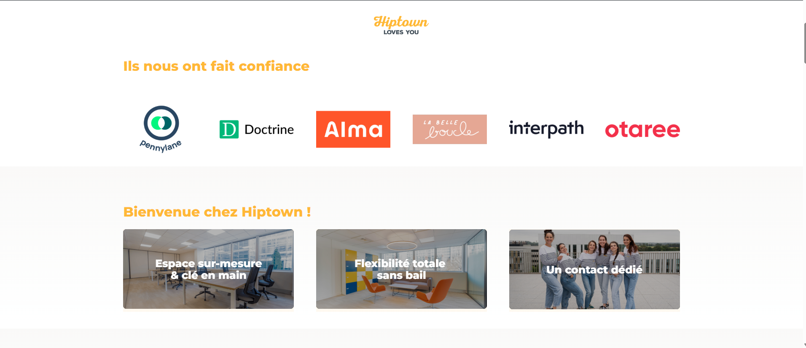
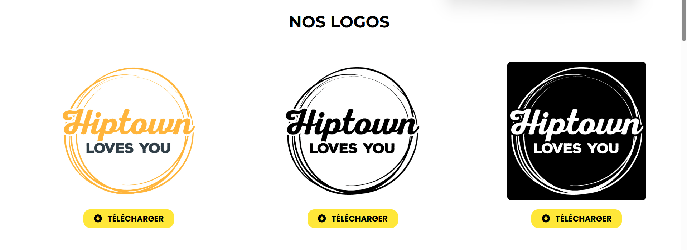
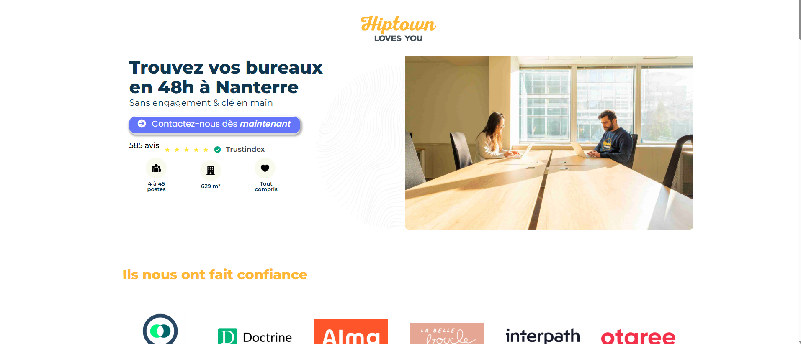
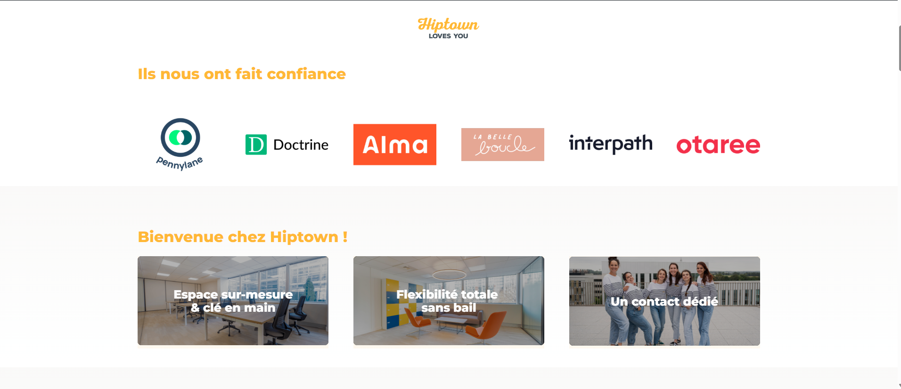

 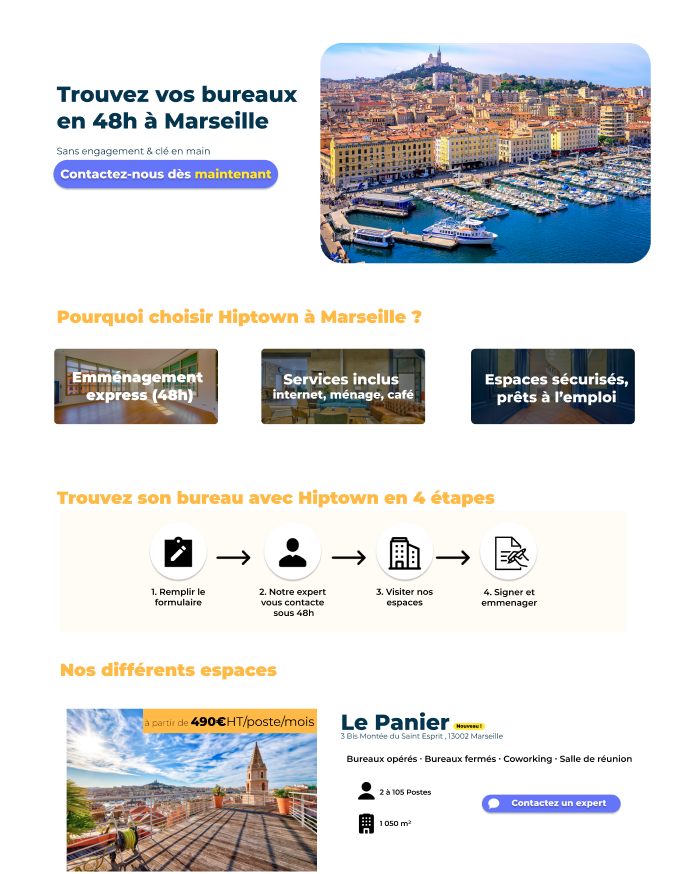
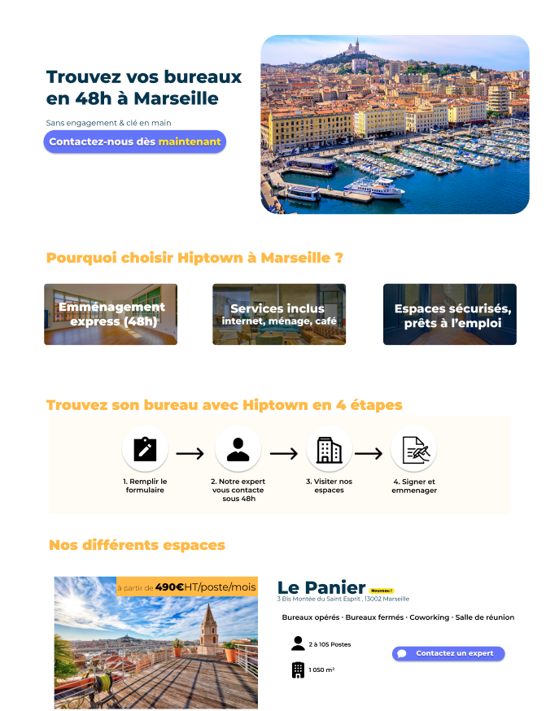